Animações
Transições
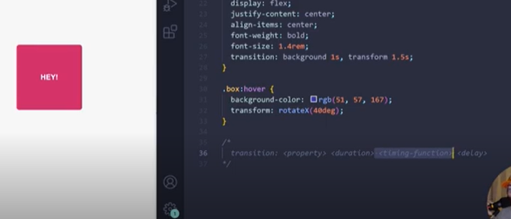 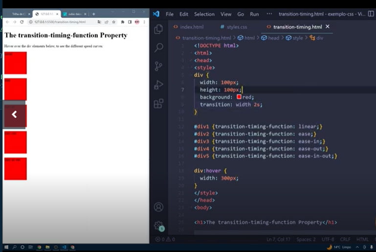Animações Complexas
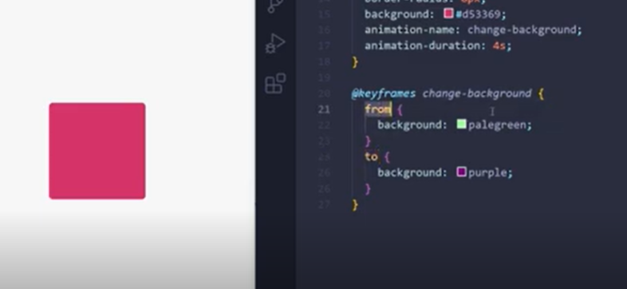 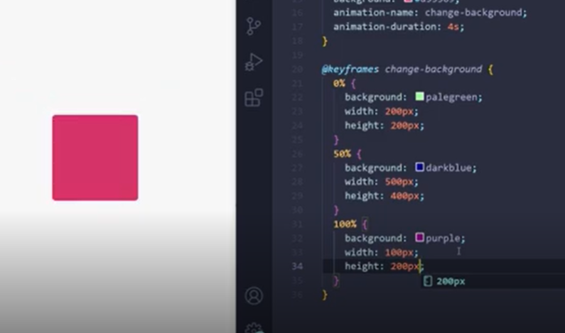Definindo atraso e nro de interações
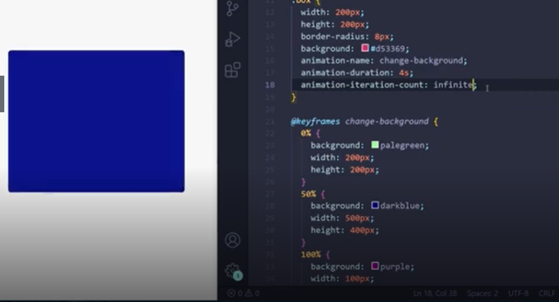 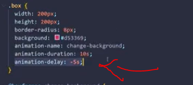Direção e velocidade
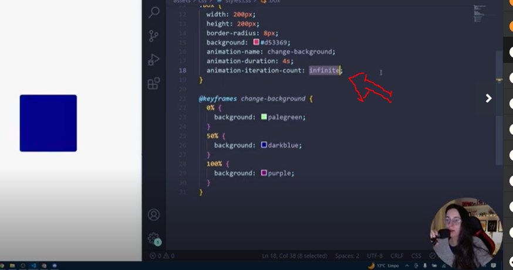 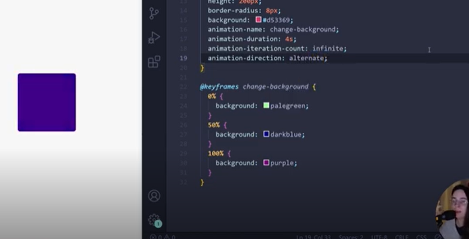alternate: inicia normal depois inicia pelo final
Animation Film Mode
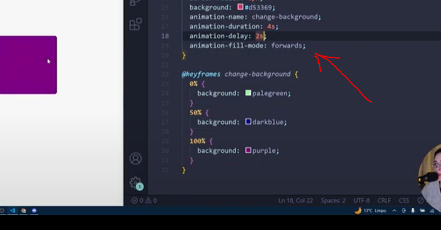
Pause and Shorthand
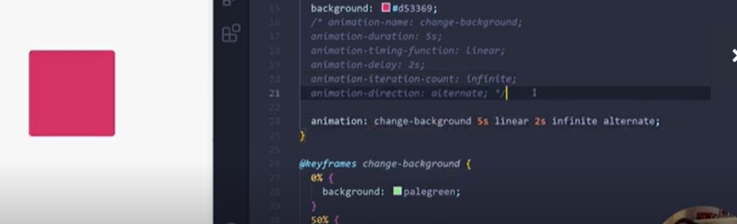 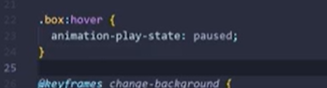Exemplos
botão animado
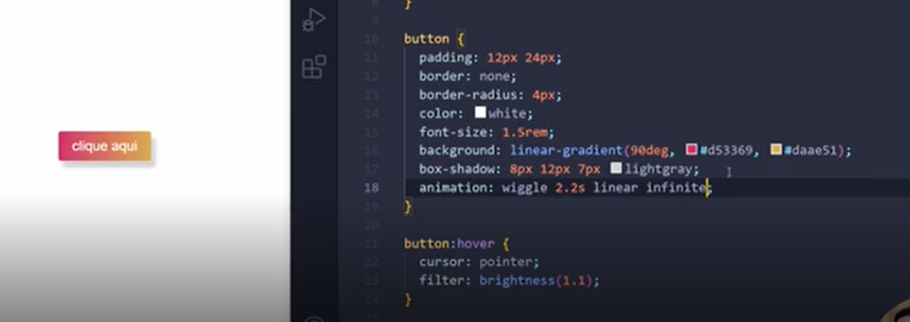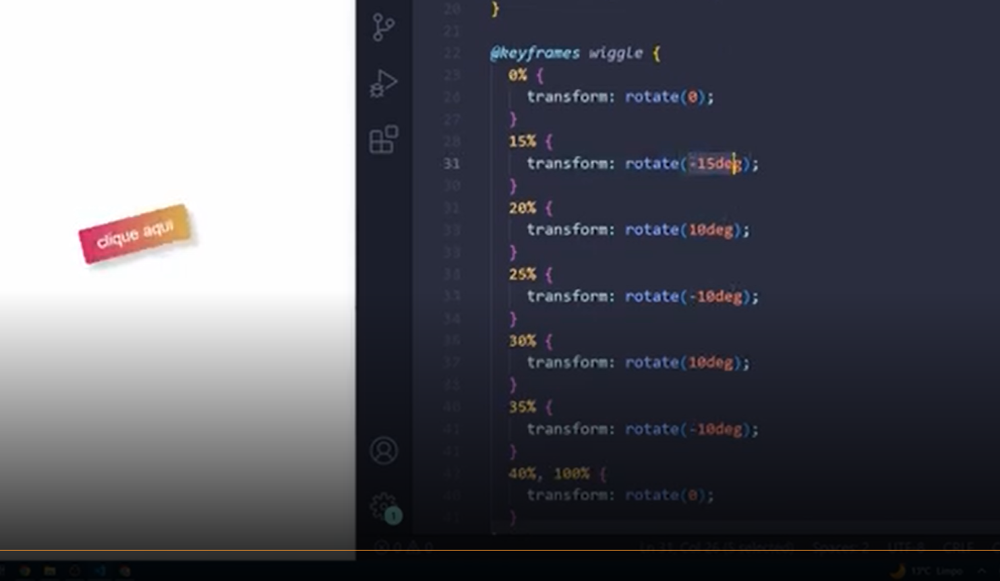
Exemplos 2
botoes Loader
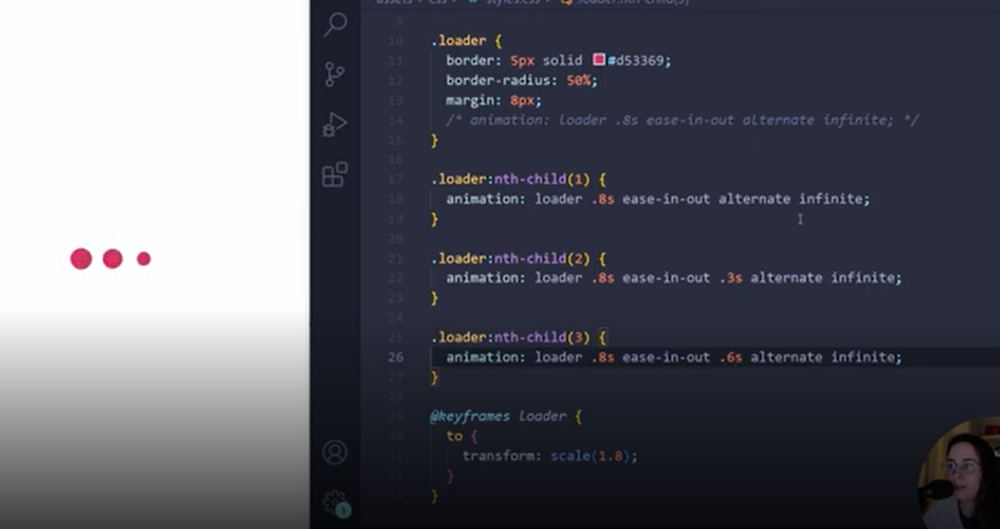
Exemplos 3
Foguetiiinhooo
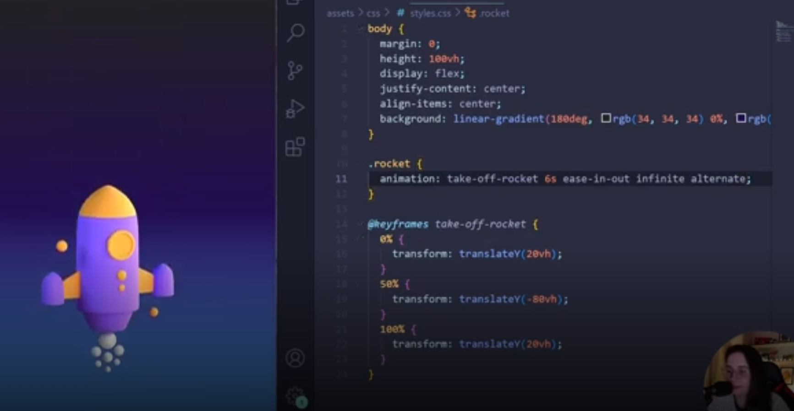
Exemplos 4
Show me the Code
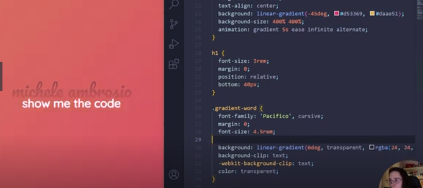

Apoio
Materiais de Apoio Nossos materiais complementares e de apoio têm como objetivo apresentar informações para facilitar e enriquecer a sua jornada de aprendizado. Para isso, links úteis (como slides, repositórios e páginas oficiais) serão disponibilizados, além de dicas sobre como se destacar na DIO e no mercado de trabalho 😉 Links - CodePen https://codepen.io/kevinpowell/pen/PoeGYGK https://codepen.io/programi